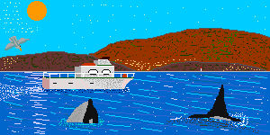
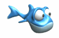
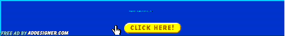

Kylor sux
The horrible, nineties-themed birthday homage to the great  Kerns herself.
Kerns herself.

To celebrate the special day of everyone's favorite future-environmental-scientist-slash-rich-consultant-slash-semi-permanent-visitor-to-hawaii-in-case-you-didn't-know we've drawn up a list of fun facts about her. In no particular order:
- She's a reading machine. Her Goodreads profile would make librarians jealous.

- To her, all memes are "soft memes." #NotMad#ItsFine
- She's a gemini and she's .
- Idk if you heard but she's in Hawaii.

- Homegirl worked in Australia as well so maybe if you're lucky you'll get to hear her Aussie impression.
- She a swammmmmerrrrrrrrr 
- Did we mention Hawaii?
- Literally the Queen of Trash TV. Nobody better in the world to watch some bad reality television with.
- She's quirky and... dare I say it.......... unconventional

- H-A-W-I-I
tl;dr Happy Birthday Kylor!

Since no nineties-themed site would be complete without some truly terrible ads, the Kylor Sux site is sponsored by:
